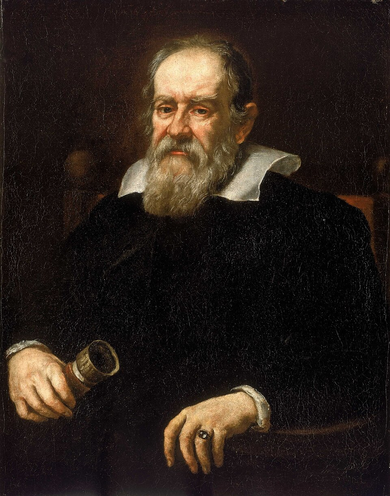

Guarda nel cannocchiale
«Il libro dell’universo è scritto in lingua matematica.»
Otto domande. Una alla volta. Leggete la frase giusta e toccatela. Ci vogliono circa dieci minuti.
Ritratto di Justus Sustermans, 1636. Pubblico dominio.
Galileo · il cannocchiale

«Il libro dell’universo è scritto in lingua matematica.»
Otto domande. Una alla volta. Leggete la frase giusta e toccatela. Ci vogliono circa dieci minuti.
Ritratto di Justus Sustermans, 1636. Pubblico dominio.